Restaurant Sempiterno
MENÚ
Conoce todas las opciones que traemos desde Italia hasta tu mesa.
Gran Giorno que incluye una garrafa de 473 mL de jugo natural o fruta chica (113 g) y rellenable de café americano o té.
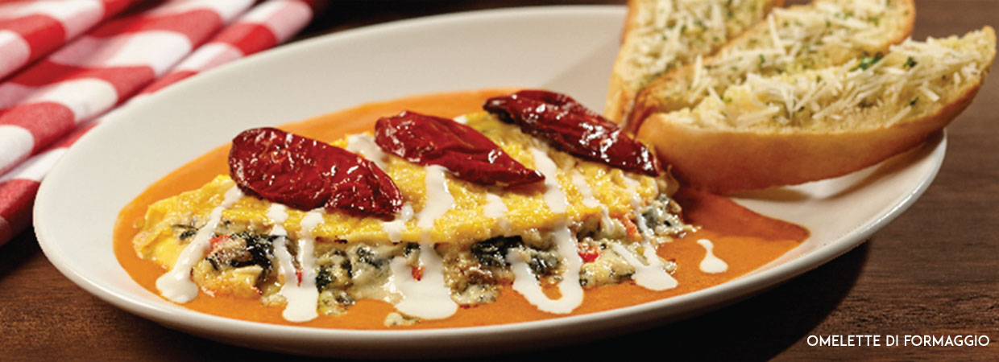
Enchiladas.
Nuestras deliciosas enchiladas en la salsa de tu preferencia: verde, roja, mole o suiza, rellenas de pollo (120 g), queso (112 g) o huevo revuelto (3 piezas), acompañadas de frijoles refritos.
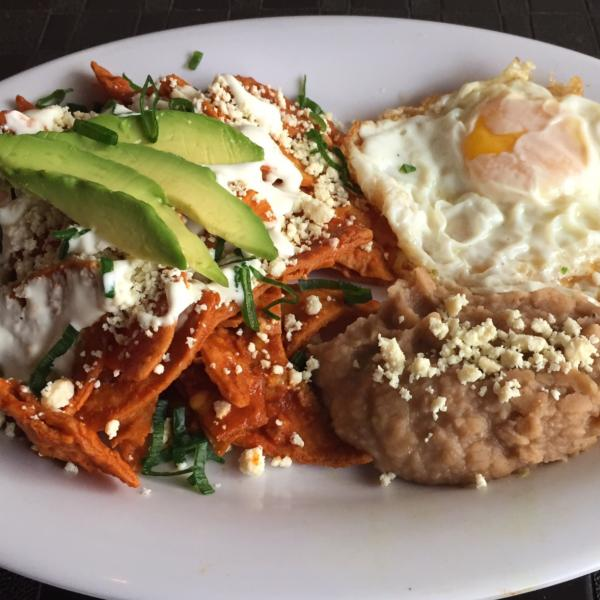 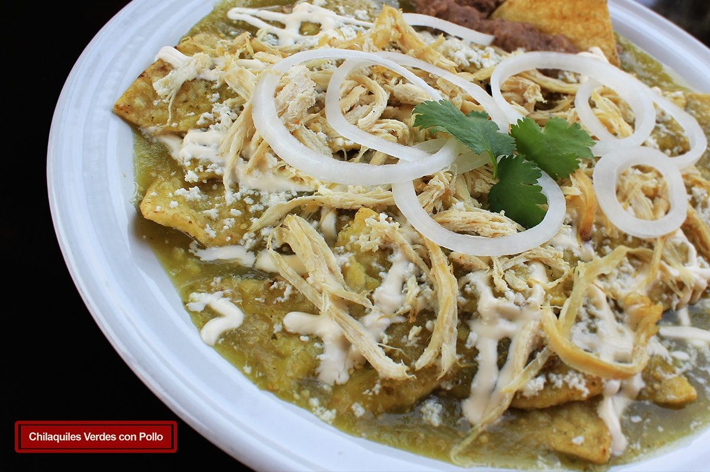
Huevos separados.
Estrellados, sobre salsa roja y verde. Servidos en una tortilla y separados por nuestros chilaquiles con crema, queso fresco y cebolla, acompañados de frijoles refritos.
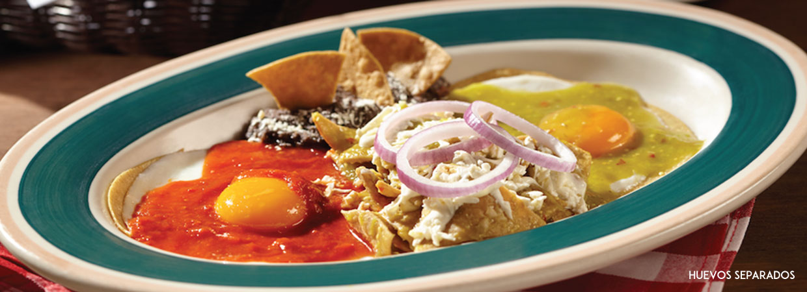
Te invitamos a ordenar nuestras ensalada Di Mela, Campesina y Cesare con Pollo Romano
tamaño mediano y obtén una ensalada adicional.
 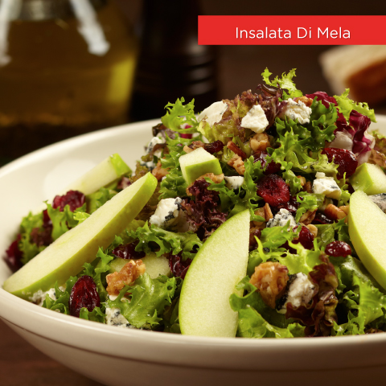
Aglio olio e peperoncino.
¡Una de las recetas más populares de Italia! Delicioso spaghetti salteado con aceite de oliva, perejil y peperoncino con alcachofa y jitomate cherry. Con un ligero sabor a ajo y pimienta negra. Agrega camarones (5 piezas / 64 g) o pechuga de pollo asado (170 g).
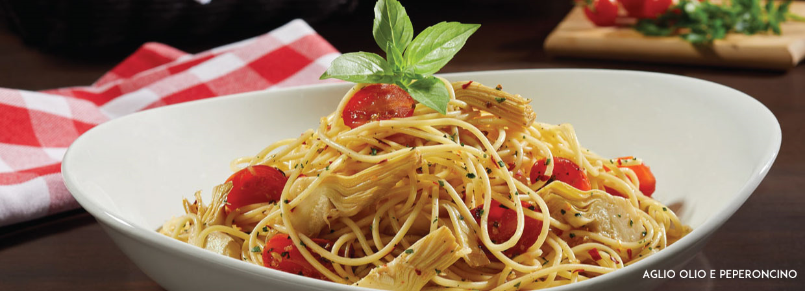
Pizza di salmone.
Con nuestra clásica salsa pomodoro, queso mozzarella rayado, rebanadas de salmón marinado (85.05 g) con alcaparras, queso crema, aros de cebolla morada y cebollín picado. ¡Un placer para tu paladar!.
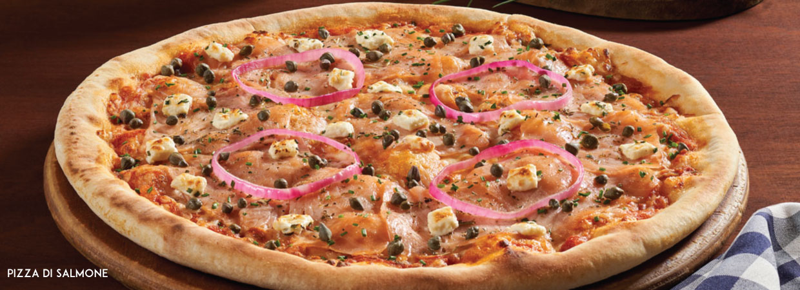
PANINI SUPREMO
Deliciosa combinación de jamón y peperoni, con queso gouda, lechuga sangría y frescas rebanadas de jitomate en nuestro crujiente pan recién horneado, con un toque de vinagreta italiana.
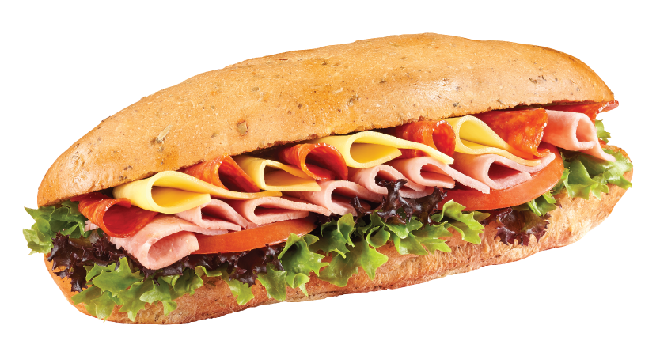
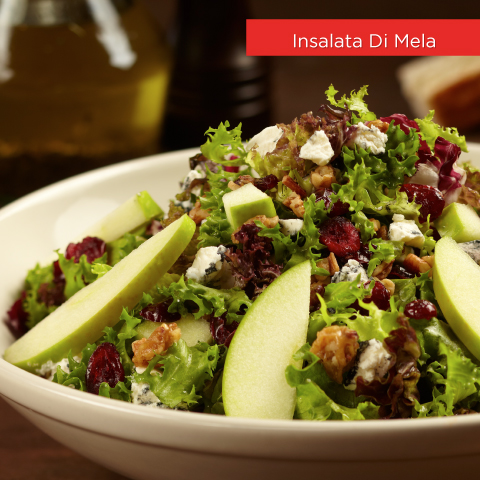
Aglio olio e peperoncino.
¡Una de las recetas más populares de Italia! Delicioso spaghetti salteado con aceite de oliva, perejil y peperoncino con alcachofa y jitomate cherry. Con un ligero sabor a ajo y pimienta negra. Agrega camarones (5 piezas / 64 g) o pechuga de pollo asado (170 g).
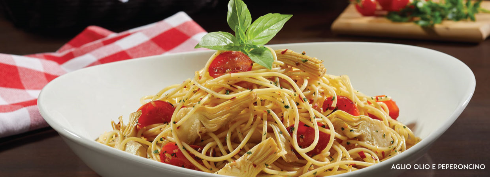
Pizza di salmone.
Con nuestra clásica salsa pomodoro, queso mozzarella rayado, rebanadas de salmón marinado (85.05 g) con alcaparras, queso crema, aros de cebolla morada y cebollín picado. ¡Un placer para tu paladar!.
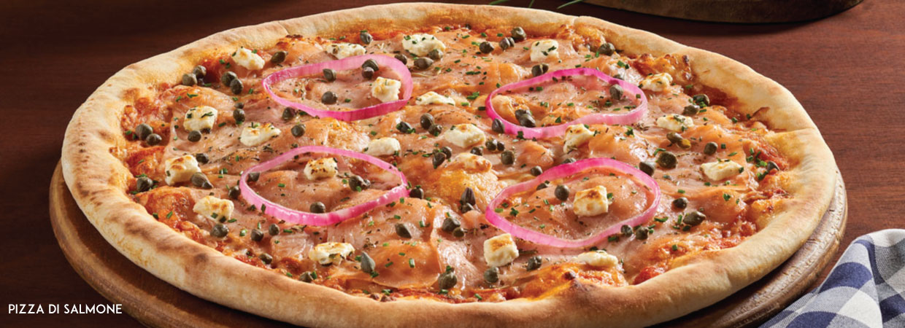
PANINI SUPREMO
Deliciosa combinación de jamón y peperoni, con queso gouda, lechuga sangría y frescas rebanadas de jitomate en nuestro crujiente pan recién horneado, con un toque de vinagreta italiana.
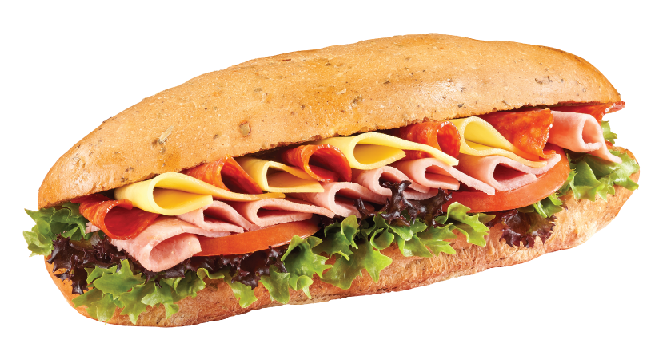